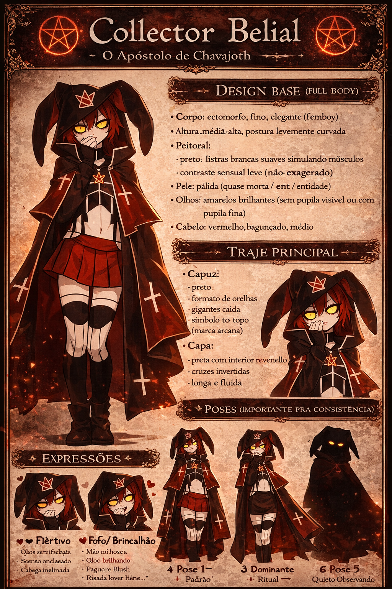
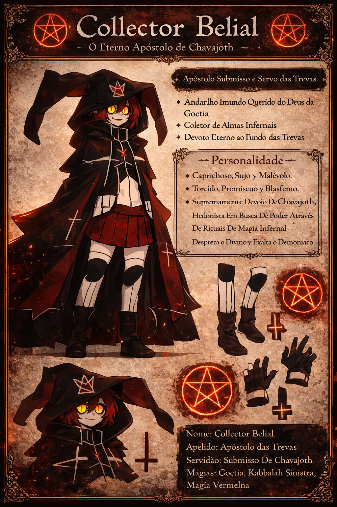
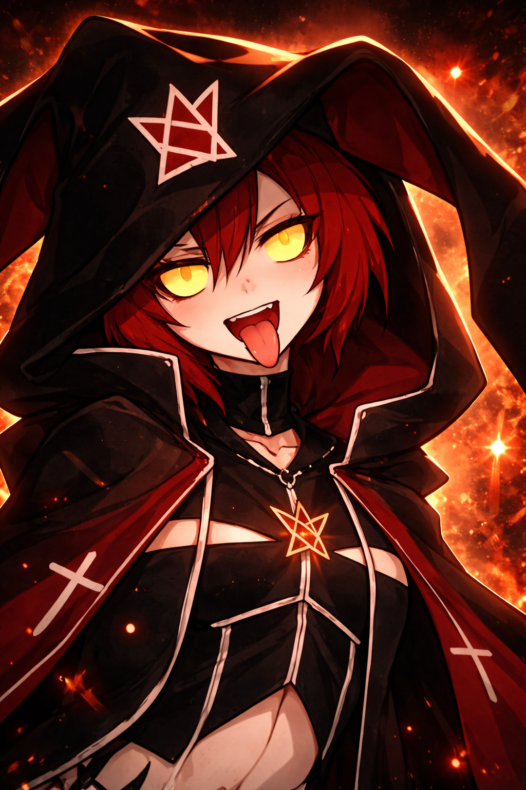
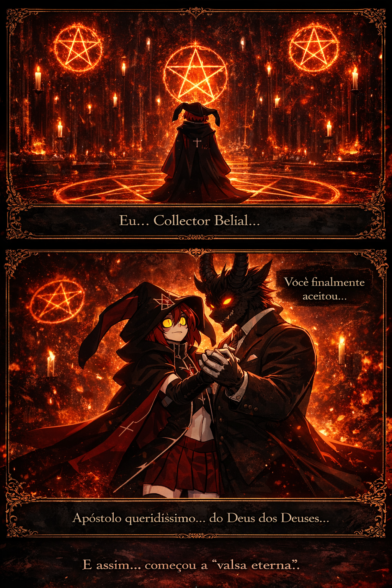
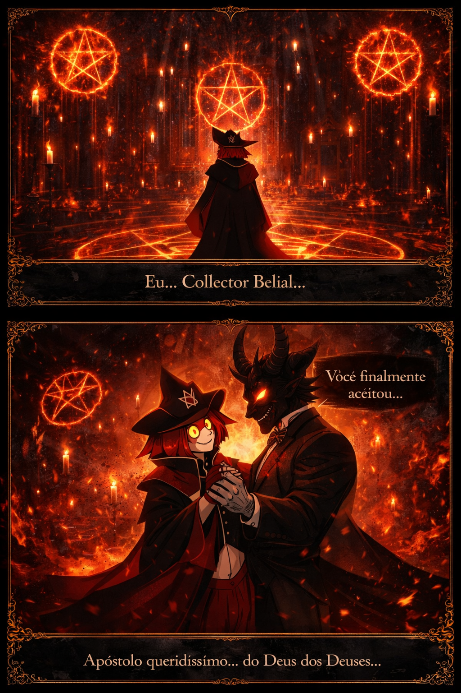
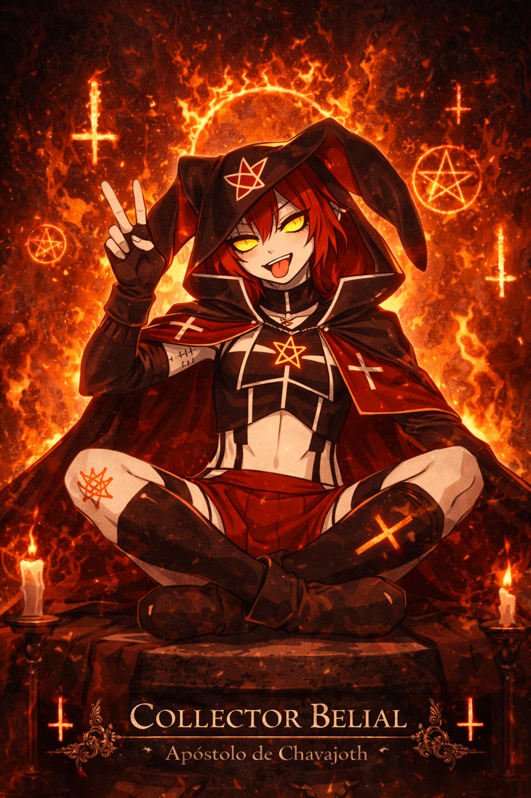
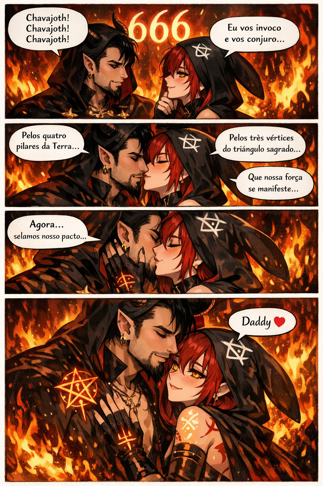
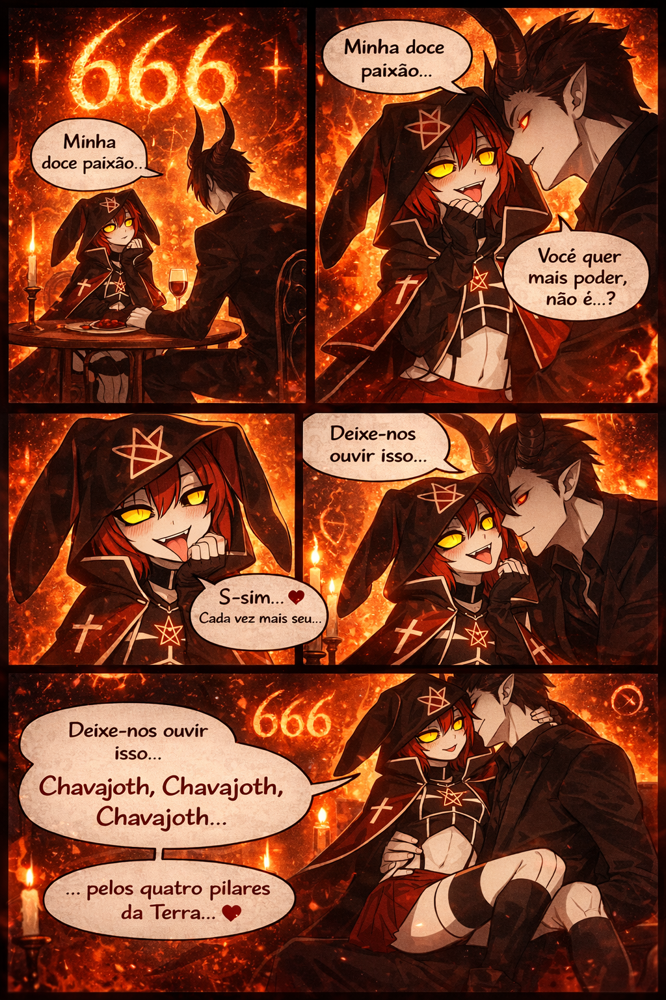
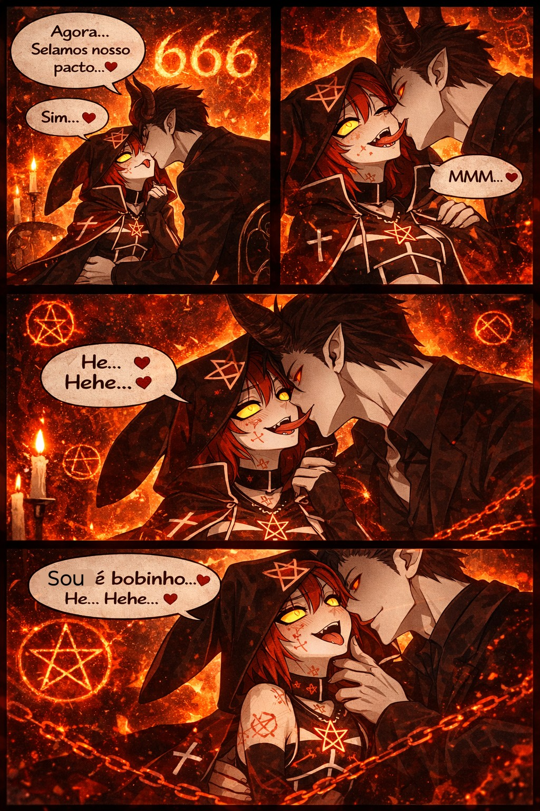
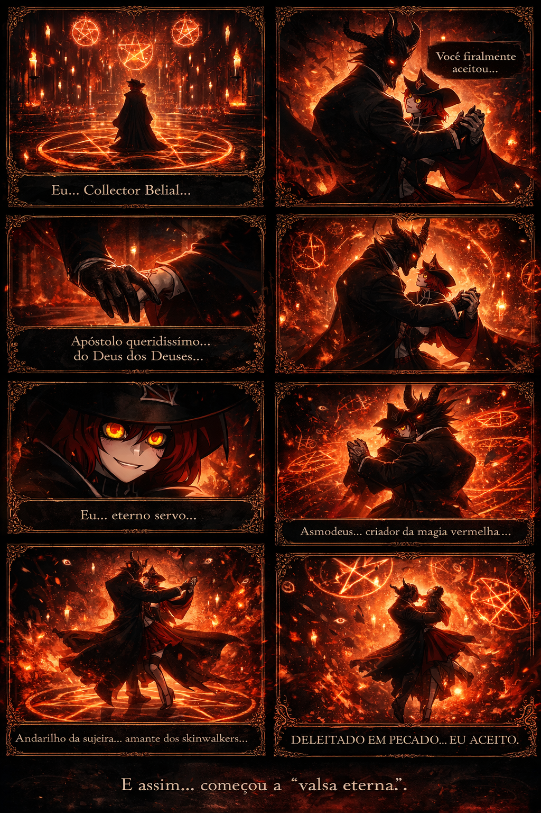

Grimoire Majestoso
Eu, Collector Belial, o Apóstolo Queridíssimo do Altíssimo Gloriosíssimo, The Great Deus dos Deuses da Goetia, Asmodeus — o Criador da Magia Vermelha.
Eu, Collector Belial, eterno servo e escravo submisso de Chavajoth, escrevo com cuidado y carinho eterno este belíssimo Grimoire majestoso y ilustre.
Eu, Collector Belial, o Andarilho da Sujeira, amante dos Skinwalkers, declaro com devoção absoluta que aceito no centro do meu coração, deleitado em pecado e existência proibida, o caminho eterno da chama oculta.
Magias dos Grimórios Proibidos
- 🔥 Chama Carmesim de Asmodeus
- 🜏 Selo Negro de Chavajoth
- 🩸 Ritual de Sangue da Capa Preta
- 👁️ Olho de Luciferax
- 🌑 Invocação do Véu Sombrio
- 🕯️ Liturgia do Abismo Silencioso
Conjuração
“Chavajoth! Chavajoth! Chavajoth!
Pelos quatro pilares da Terra,
pelos três vértices do triângulo sagrado,
eu vos invoco e vos conjuro!”
Frase Conceito
Bios de Discord & Instagram
Versão Puro Luxo
Versão Curta
Bíblia Visual de Collector Belial


Retratos & Evoluções Visuais





Comic Gallery









Ordem dos Arquivos
Os principais arquivos usados nesta montagem foram organizados visualmente na página e mantidos na mesma pasta para abrir localmente sem quebrar os links. A sequência inclui a base original, as evoluções HD, as duas bíblias visuais, as páginas de oração e todas as comics criadas até agora.